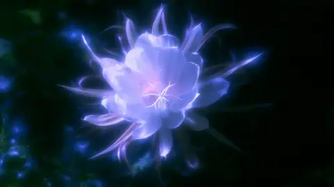

A COLLECTIVE OF
DREAMERS & MAKERS
SEOUL, KR · 2026
We turn little moments
into extraordinary
immersive worlds.

MOVE TO FEEL THE LIGHT01 / THE IDEAART × MOTION × INTERACTION
Small gestures.
Infinite
possibilities.
작은 움직임에서 시작되는,
또 하나의 세계.
빛과 공간, 그리고 당신의 움직임.
우리는 그 사이에서 새로운 감각을 발견합니다. 꽃이 피어나고 풍경이 반응하는 순간을 만들며, 현실과 꿈의 경계를 탐구합니다.
FROM A SMALL WINDOWInto another
Into another
world.
스크롤하며 공간 안으로 들어가 보세요.
02 / SELECTED EXPLORATIONSFROM IMAGINATION TO EXPERIENCE
Work in wonder.
상상하고, 만들고, 실험합니다.
하나의 세계가 완성되기까지의 장면들.
The quiet bloom
Beyond the screen
A little awakening
Anatomy of a dream
Making it real
6 explorations — and still dreaming.
03 / BEHIND THE SCENESAN ONGOING EXPLORATION
A world.
Built together.
완성된 장면 뒤에는
수많은 작은 실험이 있습니다.
꽃잎 하나의 빛부터 공간 전체의 움직임까지.
R&D에서 상상을 구체화하고, 스튜디오에서 감각을 확인합니다.
IMAGINE→MAKE→EXPERIENCE